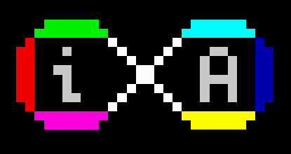

ZXGM Infinity
Manual para configurar las características de Infinity

Cosas implementadas en Infinity
- Más movimientos de enemigos disponibles y configurables
- Nuevo modo de juego por niveles
- Los enemigos tienen la habilidad de disparar (con múltiples configuraciones)
- Las músicas pueden ser usadas tantas veces cómo se quiera
- Modo aventura gráfica: Textos interactivos en items tipo aventura gráfica con progresión de la aventura
- Nuevo tipo de disparo boomerang
- Animación de disparo del jugador
- Check points configurables in-game
- Velocidad del juego mejorada
- Más espacio disponible para desarrollar
- Modo de vidas con energía disponible
- Los enemigos pueden soltar drops
- Se pueden poner plataformas manejables por el jugador
- Posibilidad de quitar muros de enemigos cogiendo items
- Posibilidad de hacer colisionar balas de enemigos con player
- Posibilidad de deshabilitar la colisión de la bala del player
- Se permite saltar en los enemigos sin matarlos
- Posibilidad de indicar que los enemigos colisiones con el escenario
- Los enemigos pueden reaparecer en la pantalla
-
Se puede indicar que los enemigos se ralenticen en lugar de morir
-
Selección de modo gráfico
- Enemigos trampa
- Escaleras diagonales (de momento los 2 primeros tiles traspasables)
-
Selección de número de tiles traspasables
-
Mucha corrección de bugs y optimización de código